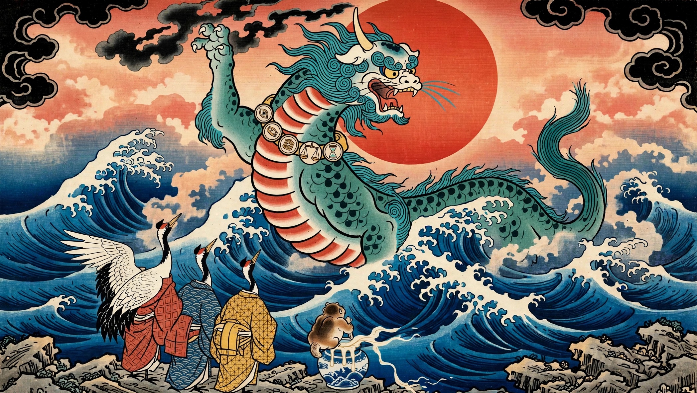
The Tale of Taming the Beast · Webtoon Edition 4.9 — Source-Verified Text Patch.
A coin that could refuse. A Beast that had to be tamed. Ten episodes on how money learned to keep its promises — story first, meaning after, with proposal status and security limits made explicit.
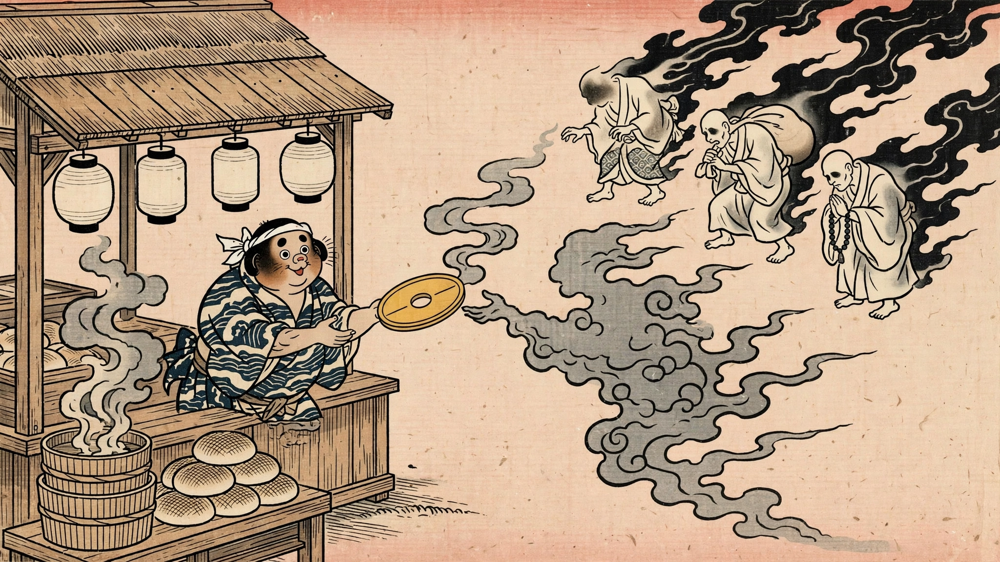
EPISODE 0 · PrologueThe Coin That Obeyed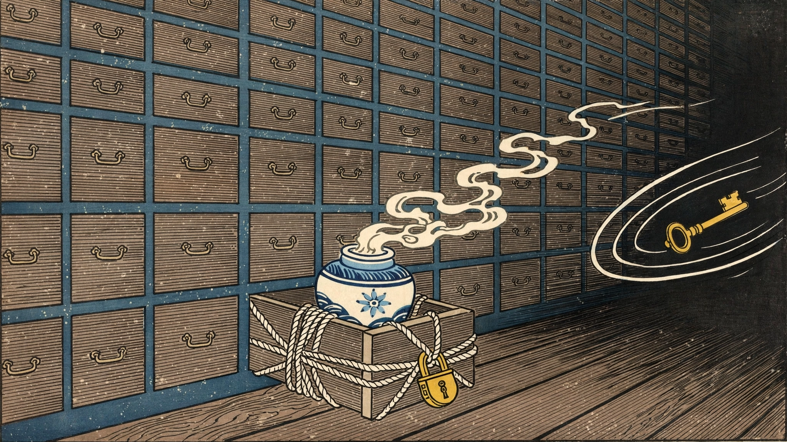
EPISODE 1 · 2010A Door Closes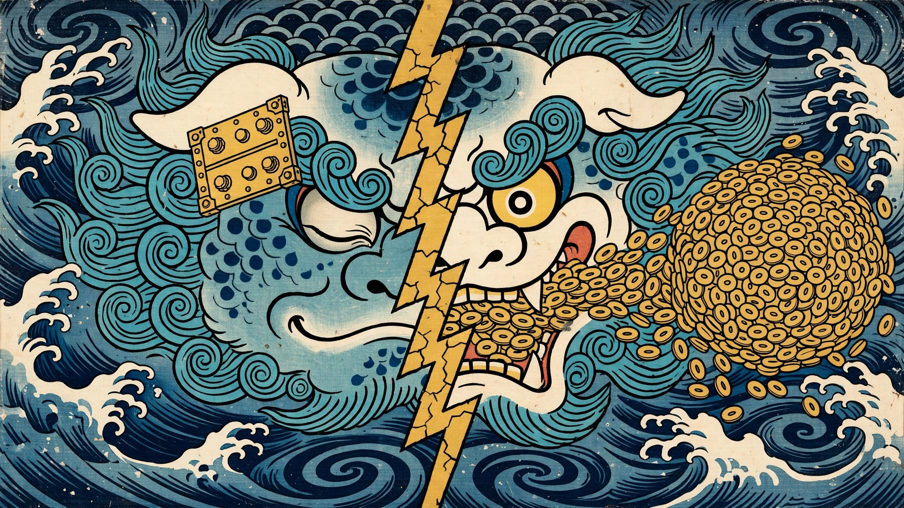
EPISODE 2 · 20 August 2013The Joke Thread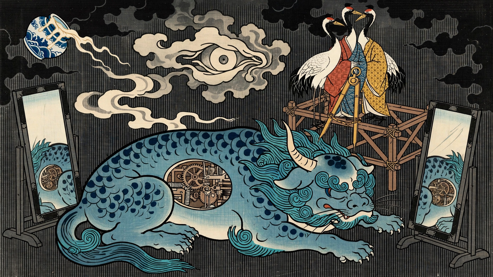
EPISODE 3 · 2013 to 2017Giving the Beast a Name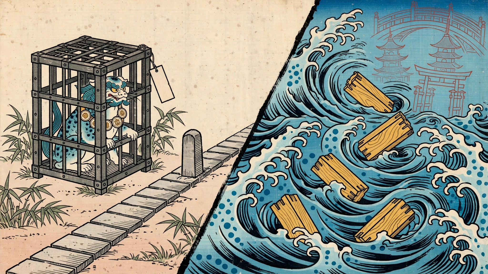
EPISODE 4 · 2020 to October 2026The Long Argument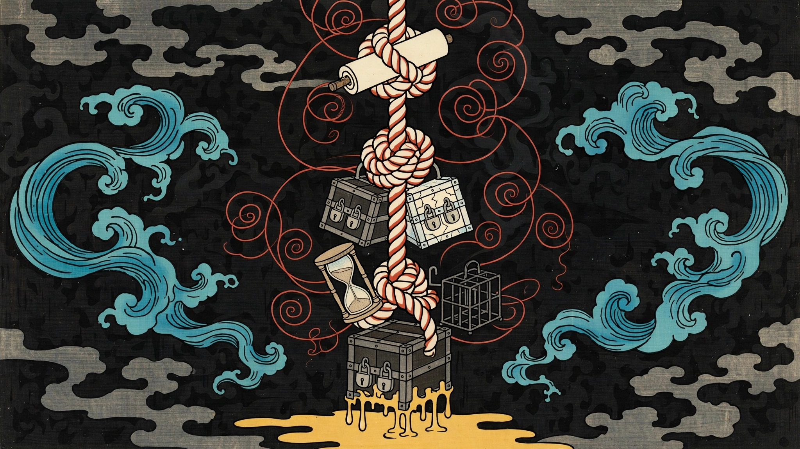
EPISODE 5 · Structural MysteryThe Three Knots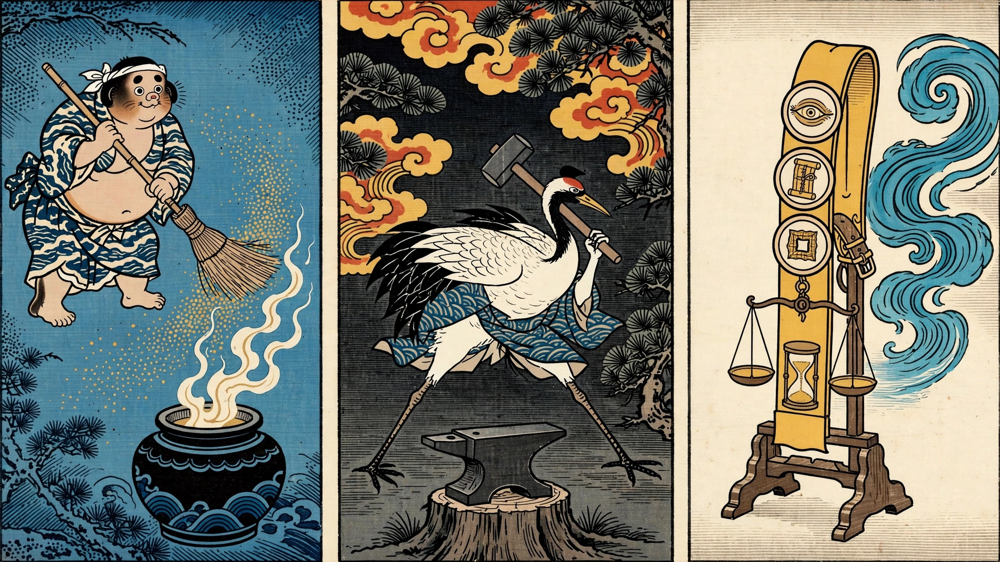
EPISODE 6 · 2024 to 2026Kaspa’s Road to Toccata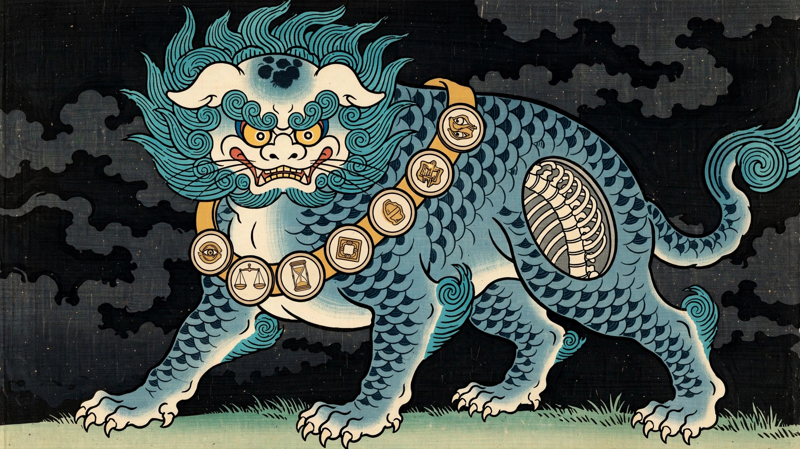
EPISODE 7 · 2026 ArchitectureAnatomy of a Tamed Beast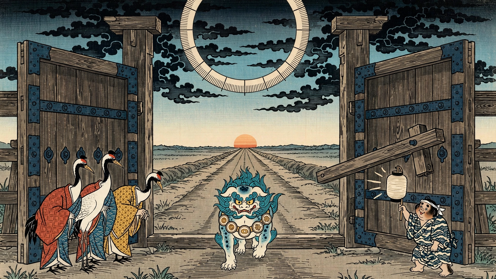
EPISODE 8 · 30 June 2026Activation Day & The Vault in Motion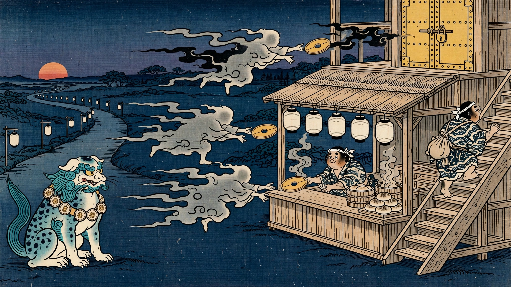
EPISODE 9 · EpilogueThe Beast at Work